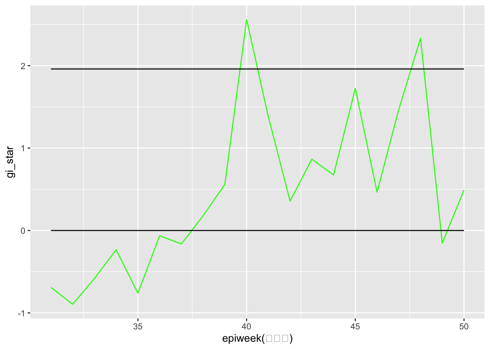

Code
lisa <- wm_q %>% mutate(local_moran = local_moran(
total_cases, nb, wt, nsim = 79),
.before = 1) %>%
unnest(local_moran)This webpage is a continuation of Take-home Exercise 2 (Part 1), which can be found here.
Additional reference link for Section 7.3:
Moving onto our next steps…
After inferring that the number of dengue cases are not spatially randomly distributed across villages, it would be meaningful to detect clusters and outliers.
To do so, we would conduct local spatial autocorrelation analysis. Local spatial autocorrelation analysis delves deeper than its global counterpart, going beyond the overall pattern to examine spatial relationships at the individual location level. It investigates whether a specific location’s value is similar or dissimilar to the values of its surrounding locations. This provides a more granular and nuanced understanding of spatial clustering or dispersion.
Key points:
Focuses on individual locations: It analyzes the relationship between a specific location and its neighbors, providing insights into local patterns that might be obscured in global analysis.
Identifies clusters and outliers: It allows identification of spatial clusters of similar or dissimilar values, as well as spatial outliers that deviate significantly from their neighbors.
Common statistics: Common local spatial autocorrelation statistics include Local Moran’s I and Getis-Ord G statistics. These statistics evaluate local deviations from spatial randomness for each location.
The first step in performing the local spatial autocorrelation analysis is deriving the Local Indicator of Spatial Association (LISA). The LISA for each observation gives an indication of the extent of significant spatial clustering of similar values around that observation.
To compute LISA, we can apply the following code.
lisa <- wm_q %>% mutate(local_moran = local_moran(
total_cases, nb, wt, nsim = 79),
.before = 1) %>%
unnest(local_moran)Components of code:
mutate() from dplyr package to create a new column consisting of local_moran’s I statistics
based on
variable: total cases
number of simulations (79 + 1) = 80
unnest() from base R to expand the list-coumn containing the resulting data frame of local moran’s I statistics into columns
Output of code (columns):
ii: local moran statistic
eii: expectation of local moran statistic; for localmoran_permthe permutation sample means
var_ii: variance of local moran statistic; for localmoran_permthe permutation sample standard deviations
z_ii: standard deviate of local moran statistic; for localmoran_perm based on permutation sample means and standard deviations
p_ii: p-value of local moran statistic using pnorm(); for localmoran_perm using standard deviatse based on permutation sample means and standard deviations
p_ii_sim: For localmoran_perm(), rank() and punif() of observed statistic rank for [0, 1] p-values using alternative hypothesis
p_folded_sim: the simulation folded [0, 0.5] range ranked p-value (based on https://github.com/pysal/esda/blob/4a63e0b5df1e754b17b5f1205b cadcbecc5e061/esda/crand.py#L211-L213)
skewness: For localmoran_perm, the output of e1071::skewness() for the permutation samples underlying the standard deviates
kurtosis: For localmoran_perm, the output of e1071::kurtosis() for the permutation samples underlying the standard deviates.
Then, we can create a choropleth map using tmap functions to visualize the local moran statistic (“ii”) of different villages.
tm_shape(lisa) +
tm_fill("ii") +
tm_borders(alpha=0.5) +
tm_layout(main.title = "Local Moran's I of Total Cases",
main.title.size = 0.8)
Interpreting Local Moran’s I (“ii”):
Positive: Cluster (village is associated with relatively high values of surrounding villages)
Negative: Outlier (village is associated with relatively low values of surrounding villages)
But how significant are these clusters and outliers? To discover that, we will have to check their p-values, in the next step!
Here, we prepare a choropleth map using tmap functions to visualize the p-value of local moran statistic (“p_ii_sim”). of the different villages, to detect which villages are significant clusters/outliers.
tm_shape(lisa) +
tm_fill("p_ii_sim",
breaks = c(0, 0.001, 0.01, 0.05, 1),
labels = c("0.001", "0.01", "0.05", "Not significant")) +
tm_borders(alpha = 0.5) +
tm_layout (main.title = "p-value of local Moran's I",
main.title.size = 0.8)
From the choropleth map of p-values, we can see that many parts (more than half) of clusters and outliers discovered by the local moran’s I statistics are not significant at 95% confidence level. However, there are still a larger number of villages, particularly those in the northern and eastern regions, that exhibit significant clustering/outliers at 95% confidence level.
Putting the local moran’s I value and p-value choropleth maps side by side allows to interpret out results more easily, tracing which villages are significant outliers or significant clusters on the map. To do so, we can use tmap_arrange() from tmap package to put the maps together, as demonstrated in the code chunk below.
local_mapi <- tm_shape(lisa) +
tm_fill("ii") +
tm_borders(alpha=0.5) +
tm_layout(main.title = "Local Moran's I of Total Cases",
main.title.size = 0.8)
local_mapp <- tm_shape(lisa) +
tm_fill("p_ii_sim",
breaks = c(0, 0.001, 0.01, 0.05, 1),
labels = c("0.001", "0.01", "0.05", "Not significant")) +
tm_borders(alpha = 0.5) +
tm_layout (main.title = "p-value of local Moran's I",
main.title.size = 0.8
tmap_arrange(local_mapi, local_mapp, ncol = 2)
An obvious group of regions that exhibit significant cluster patterns (at 95% confidence level) are the north-western regions of Tainan.
LISA map is a categorical map showing outliers and clusters. There are two types of outliers namely: High-Low and Low-High outliers. Likewise, there are two type of clusters namely: High-High and Low-Low clusters. In fact, LISA map is an interpreted map by combining local Moran’s I of geographical areas and their respective p-values.
In lisa sf data.frame, we can find three fields contain the LISA categories. They are mean, median and pysal. In general, classification in mean will be used as shown in the code chunk below, highlighting only villages that exhibit significant clustering/outliers at 95% confidence level.
lisa_sig <- lisa %>% filter(p_ii <0.05)
tm_shape(lisa) +
tm_polygons() +
tm_borders(alpha = 0.5) +
tm_shape(lisa_sig) +
tm_fill("mean") +
tm_borders(alpha=0.4)
The choropleth map tells us that :
The north-western and north-eastern regions (in purple) of significant clusters make up of “low-low” clusters, forming clusters of low numbers of dengue cases.
On the other hand, some villages in the middle regions (red) make up significant clusters of “high-high” values, implying that they are clusters of high numbers of dengue cases.
There are a few villages of “low-high” outliers (purple), showing that they are villages with low numbers of dengue cases, surrounded by villages with higher numbers of dengue cases.
Emerging hotspot analysis (EHSA) goes beyond traditional hotspot analysis by examining how spatial clusters of high or low values evolve over time. It identifies areas that are not currently hotspots but display a trend towards becoming one, providing valuable insights for proactive measures and prevention strategies.
Key points:
Focuses on trends: Analyzes changes in spatial clusters over time, identifying emerging hotspots, intensifying hotspots, and diminishing hotspots along with persistent and sporadic patterns.
Proactive approach: Enables proactive measures as it identifies areas exhibiting early signs of becoming hotspots, allowing for interventions before the problem escalates.
To begin with, let’s combine our dengue observations based on epidemiology weeks. To do so, we can use group_by() and summarize() from dplyr package, and epiweek() from lubridate package.
dengue_epi_sf <- dengue_sf %>%
group_by(VILLENG, TOWNID, epiweek(發病日)) %>%
summarize(cases=n())In the above code,
group_by() groups our records according to the fields in the arguments, in ascending order by default, and in order starting with the first field indicated
summarize() creates a new field, returning one row of aggregated value for each combination of grouped variables
epiweek() extrac
To build a space-time cube later, we can only define one field as the location field. Hence, we will need to create a new location field which is composed of VILLENG and TOWNID, separated by a comma. A new column can be created using mutate() of dplyr package, and the VILLENG and TOWNID fields can be combined using paste() from base R.
dengue_epi_sf <- dengue_epi_sf %>% mutate(location = paste(VILLENG, ",", TOWNID))One of the conditions of building a spacetime cube is that given a number of spatial features (which in this case, is our locations) n, and time periods m, a spatio-temporal full grid must have n X m rows. However, as our existing data only captures actual dengue cases that are recorded, days with 0 cases are not recorded. Therefore, we must insert the records where there are 0 cases by ourselves.
To do so, we can apply the following steps:
Applying the code below creates a tibble table that contains our desired complete n x m records.
taiwanstudy_sf <- readRDS("/Users/binhui-ong/IS415-GAA/Take-home_Ex/Take-home_Ex02/data/rds/taiwanstudy_sf.rds")dengue_full_sf <- tibble(VILLENG = rep(taiwanstudy_sf$VILLENG, 20),
TOWNID = rep(taiwanstudy_sf$TOWNID, 20),
geometry = rep(taiwanstudy_sf$geometry, 20),
`epiweek(發病日)` = rep(c(31:50), each = 258)) %>%
mutate(location = paste(VILLENG, "," , TOWNID))In the above code:
To fill in values for each column (i.e. VILLENG, TOWNID, geometry and epiweek(發病日)), we can use rep(), a Base R function.
For VILLENG, TOWNID and geometry fields: It replicates the set (vector) of values input in the first argument, for as many times as stated in the second argument throughout the records.
For epiweek(發病日) field: It replicates each individual value in the vector in the first argument for the number of times indicated in the “each” argument, before replicating the next value in the vector the same way, functioning this way throughout all the records.
Here, we use left_join() from the dplyr package to insert our dengue case records in dengue_epi_sf into dengue_full_sf.
dengue_full_sf <- dengue_full_sf %>% left_join(dengue_epi_sf, join_by(VILLENG, TOWNID, `epiweek(發病日)`)) Since we do not need the geometry.y column that is redundant and contains missing values, we can remove it using select() from dplyr, and rename geometry.x as geometry since it is our geometry column.
dengue_full_sf <- dengue_full_sf %>% select(-geometry.y, -location.y) %>% rename(geometry = geometry.x, location = location.x)dengue_full_sf %>% dplyr::arrange(VILLENG)# A tibble: 5,160 × 6
VILLENG TOWNID geometry `epiweek(發病日)` location cases
<chr> <chr> <POLYGON [°]> <dbl> <chr> <int>
1 Andong Vil. D06 ((120.2164 23.04019, 120… 31 Andong … 1
2 Andong Vil. D06 ((120.2164 23.04019, 120… 32 Andong … NA
3 Andong Vil. D06 ((120.2164 23.04019, 120… 33 Andong … 2
4 Andong Vil. D06 ((120.2164 23.04019, 120… 34 Andong … NA
5 Andong Vil. D06 ((120.2164 23.04019, 120… 35 Andong … 1
6 Andong Vil. D06 ((120.2164 23.04019, 120… 36 Andong … 2
7 Andong Vil. D06 ((120.2164 23.04019, 120… 37 Andong … 1
8 Andong Vil. D06 ((120.2164 23.04019, 120… 38 Andong … 5
9 Andong Vil. D06 ((120.2164 23.04019, 120… 39 Andong … 7
10 Andong Vil. D06 ((120.2164 23.04019, 120… 40 Andong … 14
# ℹ 5,150 more rowsIn the above code, I have displayed the records by alphabetical order of VILLNAMEs, for easier visualization here.
We can see that after the data wrangling, we have 5160 records, which corresponds to our 258 villages x 20 epidemiology weeks of observations. Looking into the table, there are some records with NA cases, which represent 0 cases for those corresponding weeks and villages.
Next, we should replace the NA values with 0 to prevent further complications later on, and to make those records appear clearer. To do so, we can use replace_na() from the tidyr package.
dengue_full_sf$cases <- replace_na(dengue_full_sf$cases, 0)dengue_full_sf# A tibble: 5,160 × 6
VILLENG TOWNID geometry `epiweek(發病日)` location cases
<chr> <chr> <POLYGON [°]> <dbl> <chr> <int>
1 Qingcao Vi… D06 ((120.1176 23.08387, 120… 31 Qingcao… 0
2 Bao'an Vil. D32 ((120.2304 22.93544, 120… 31 Bao'an … 1
3 Chihkan Vi… D08 ((120.2012 22.99966, 120… 31 Chihkan… 0
4 Dacheng Vi… D02 ((120.1985 22.98147, 120… 31 Dacheng… 0
5 Chengbei V… D06 ((120.1292 23.06512, 120… 31 Chengbe… 0
6 Chengnan V… D06 ((120.1246 23.06904, 120… 31 Chengna… 0
7 Fahua Vil. D08 ((120.2094 22.98452, 120… 31 Fahua V… 0
8 Hainan Vil. D06 ((120.175 23.02218, 120.… 31 Hainan … 0
9 Guo'an Vil. D06 ((120.1866 23.02766, 120… 31 Guo'an … 0
10 Xixin Vil. D06 ((120.1834 23.06086, 120… 31 Xixin V… 0
# ℹ 5,150 more rowsNext, we will be building a space-time cube of our dengue data in the study areas of villages in Tainan City, across an epidemiology week of 31-50 in 2023.
Step 1: Prepare geometry data
Let’s create a location column, similar to in dengue_epi_sf, in our geometry data taiwanstudy_sf first:
taiwanstudy_sf <- taiwanstudy_sf %>% mutate(location = paste(VILLENG, ",", TOWNID))Step 2: Creating spacetime object
Here, we can create our spacetime object using spacetime() from sfdep.
dengue_st <- spacetime(dengue_full_sf, taiwanstudy_sf,
.loc_col = "location",.time_col = "epiweek(發病日)")dengue_st# A tibble: 5,160 × 6
VILLENG TOWNID geometry `epiweek(發病日)` location cases
* <chr> <chr> <POLYGON [°]> <dbl> <chr> <int>
1 Qingcao Vi… D06 ((120.1176 23.08387, 120… 31 Qingcao… 0
2 Bao'an Vil. D32 ((120.2304 22.93544, 120… 31 Bao'an … 1
3 Chihkan Vi… D08 ((120.2012 22.99966, 120… 31 Chihkan… 0
4 Dacheng Vi… D02 ((120.1985 22.98147, 120… 31 Dacheng… 0
5 Chengbei V… D06 ((120.1292 23.06512, 120… 31 Chengbe… 0
6 Chengnan V… D06 ((120.1246 23.06904, 120… 31 Chengna… 0
7 Fahua Vil. D08 ((120.2094 22.98452, 120… 31 Fahua V… 0
8 Hainan Vil. D06 ((120.175 23.02218, 120.… 31 Hainan … 0
9 Guo'an Vil. D06 ((120.1866 23.02766, 120… 31 Guo'an … 0
10 Xixin Vil. D06 ((120.1834 23.06086, 120… 31 Xixin V… 0
# ℹ 5,150 more rowsTo verify if the result is indeed a spacetime object,
is_spacetime(dengue_st)[1] TRUEAnd whether it is a spacetime cube,
is_spacetime_cube(dengue_st)YAY! We’ve successfully created our spacetime cube, which is a spatio-tempotial full grid.
Before we can compute local Gi* statistics, we would need to derive a spatial weight matrix. To do so, we can apply the following code below, using the functions of sfdep and dplyr packages.
dengue_nb <- dengue_st %>%
activate("geometry") %>%
mutate(nb = include_self(st_contiguity(geometry)),
wt = st_inverse_distance(nb, geometry,
scale = 50,
alpha = 1),
.before = 1) %>%
set_nbs("nb") %>%
set_wts("wt")In the code above, activate() from dplyr package is used to activate the geometry context
mutate() from dplyr package is usd to create two new columns nb and wt
set_nbs() and set_wts() are used to activate the data context again and copy the values to each time_slice
Now, our dataset has neighbours and weights for each time-slice.
head(dengue_nb)# A tibble: 6 × 8
VILLENG TOWNID geometry `epiweek(發病日)` location cases
<chr> <chr> <POLYGON [°]> <dbl> <chr> <int>
1 Qingcao Vil. D06 ((120.1176 23.08387, 120… 31 Qingcao… 0
2 Bao'an Vil. D32 ((120.2304 22.93544, 120… 31 Bao'an … 1
3 Chihkan Vil. D08 ((120.2012 22.99966, 120… 31 Chihkan… 0
4 Dacheng Vil. D02 ((120.1985 22.98147, 120… 31 Dacheng… 0
5 Chengbei Vi… D06 ((120.1292 23.06512, 120… 31 Chengbe… 0
6 Chengnan Vi… D06 ((120.1246 23.06904, 120… 31 Chengna… 0
# ℹ 2 more variables: nb <list>, wt <list>Next, we used the derived new columns to manually calculate the local Gi* for each location.
gi_stars <- dengue_nb %>%
group_by(`epiweek(發病日)`) %>%
mutate(gi_star = local_gstar_perm(
cases, nb, wt)) %>%
unnest(gi_star)In the above code:
group the rows by epiweek(發病日), using group_by() from dplyr package
create a new column with local_gstar_perm() computations from sfdep package
unnest gi_star column of the newly created gi_stars data.frame, using unnest() from tidyr package
The result of our code is shown below:
gi_stars# A tibble: 5,160 × 16
# Groups: epiweek(發病日) [20]
VILLENG TOWNID geometry `epiweek(發病日)` location cases
<chr> <chr> <POLYGON [°]> <dbl> <chr> <int>
1 Qingcao Vi… D06 ((120.1176 23.08387, 120… 31 Qingcao… 0
2 Bao'an Vil. D32 ((120.2304 22.93544, 120… 31 Bao'an … 1
3 Chihkan Vi… D08 ((120.2012 22.99966, 120… 31 Chihkan… 0
4 Dacheng Vi… D02 ((120.1985 22.98147, 120… 31 Dacheng… 0
5 Chengbei V… D06 ((120.1292 23.06512, 120… 31 Chengbe… 0
6 Chengnan V… D06 ((120.1246 23.06904, 120… 31 Chengna… 0
7 Fahua Vil. D08 ((120.2094 22.98452, 120… 31 Fahua V… 0
8 Hainan Vil. D06 ((120.175 23.02218, 120.… 31 Hainan … 0
9 Guo'an Vil. D06 ((120.1866 23.02766, 120… 31 Guo'an … 0
10 Xixin Vil. D06 ((120.1834 23.06086, 120… 31 Xixin V… 0
# ℹ 5,150 more rows
# ℹ 10 more variables: nb <list>, wt <list>, gi_star <dbl>, e_gi <dbl>,
# var_gi <dbl>, p_value <dbl>, p_sim <dbl>, p_folded_sim <dbl>,
# skewness <dbl>, kurtosis <dbl>With the Gi* measures, we can evaluate trends in each village using the Mann-Kendall test. For instance, to evaluate the trend for location Andong Village which has TOWNID D06 (denoted by location = Andong Vil. , D06) we can apply the code chunk below.
andong_mktest <- gi_stars %>%
ungroup() %>%
filter(location == "Andong Vil. , D06") %>%
select(location, `epiweek(發病日)`, gi_star)andong_mktest# A tibble: 20 × 3
location `epiweek(發病日)` gi_star
<chr> <dbl> <dbl>
1 Andong Vil. , D06 31 -0.691
2 Andong Vil. , D06 32 -0.895
3 Andong Vil. , D06 33 -0.583
4 Andong Vil. , D06 34 -0.233
5 Andong Vil. , D06 35 -0.760
6 Andong Vil. , D06 36 -0.0642
7 Andong Vil. , D06 37 -0.163
8 Andong Vil. , D06 38 0.179
9 Andong Vil. , D06 39 0.561
10 Andong Vil. , D06 40 2.56
11 Andong Vil. , D06 41 1.38
12 Andong Vil. , D06 42 0.357
13 Andong Vil. , D06 43 0.865
14 Andong Vil. , D06 44 0.674
15 Andong Vil. , D06 45 1.72
16 Andong Vil. , D06 46 0.466
17 Andong Vil. , D06 47 1.47
18 Andong Vil. , D06 48 2.33
19 Andong Vil. , D06 49 -0.153
20 Andong Vil. , D06 50 0.493 Then, we can plot result using ggplot2 functions to observe the Gi* statistic across different epidemiology weeks.
ggplot(data=andong_mktest,
aes (x=`epiweek(發病日)`,
y= gi_star)) +
geom_line(color="green") +
geom_line(y = 0) +
geom_line(y = 1.96) +
geom_line(y = -1.96)
In the above plot, I have also added a reference lines where
Gi* = 0,
Gi* = 1.96 and
Gi * = -1.96.
How should we interpret the Gi* statistics? The Gi* statistic returned for each feature in the dataset is a z-score. Since the value of z-score indicates the significance of the result,
The more statistically significant positive (very positive value) the Gi*, the more intense the clustering of high values (hot spot).
The more statistically significant negative (very negative value) the Gi*, the more intense the clustering of low values (cold spot).
With that, we will use the positivity or negativity of the Gi* statistic to determine if it is a hotspot or a coldspot. Then, we should check if Gi* > 1.96 or Gi* < -1.96 to determine if the hotspot/coldspot is statistically significant at 95% confidence level.
As there are too many villages, I am unable to display the result for every single village in this website. However, I have created a ShinyApp website in which you can select any combination of and compare the trends of different villages in Tainan City, Taiwan here!
Alternatively, rather than creating static plots, we can create an interactive plot using ggplotly() of plotly package to plot the Gi* results.
p <- ggplot(data = andong_mktest,
aes(x = `epiweek(發病日)`,
y = gi_star)) +
geom_line() +
geom_line(y = 0) +
geom_line(y = 1.96) +
geom_line(y = -1.96)
ggplotly(p)We can perform the above steps for any village we’re interested in!
Now… the exciting part! We would be checking which villages exhibit trends!
To perform EHSA, we can use emerging_hotspot_analysis() from the sfdep package.
ehsa <- emerging_hotspot_analysis(
x = dengue_st,
.var = "cases",
k = 1,
nsim = 79
)In the code above, the arguments:
x is the spacetime object
.var is the variable we want to test
k = nsim is the last simulations we want to stop run (we start at the 0th simulation)
head(ehsa)# A tibble: 6 × 4
location tau p_value classification
<chr> <dbl> <dbl> <chr>
1 Qingcao Vil. , D06 0.611 0.000191 no pattern detected
2 Bao'an Vil. , D32 -0.453 0.00582 no pattern detected
3 Chihkan Vil. , D08 0.621 0.000147 no pattern detected
4 Dacheng Vil. , D02 0.358 0.0297 no pattern detected
5 Chengbei Vil. , D06 0.611 0.000191 no pattern detected
6 Chengnan Vil. , D06 0.284 0.0855 no pattern detectedggplot(data = ehsa,
aes(x=classification)) +
geom_bar()
From the visualization, it seems like all villages have no pattern detected in terms of distribution. How significant is this result though?
To examine the significance of the conclusion “all villages have no significant trend detected in terms of number of dengue cases”, we can visualize the EHSA and it’s p-value.
Firstly, we derive the EHSA of each village by using left_join() from the dplyr package to insert the EHSA values to each village in our study area.
taiwanstudy_ehsa <- taiwanstudy_sf %>% left_join(ehsa, join_by (location))Then, we use tmap functions to create the choropleth map.
ehsa_sig <- taiwanstudy_ehsa %>%
filter(p_value < 0.05)
tmap_mode("plot")
tm_shape(taiwanstudy_ehsa) +
tm_polygons() +
tm_borders(alpha = 0.5) +
tm_shape(ehsa_sig) +
tm_fill("classification") +
tm_borders(alpha = 0.4)In the above code, we are highlighting only regions that exhibit significance in having “no trend detected”. It seems that there are a large number of villages (in turquoise) with no significant trends detected over the epidemiology weeks of 35-50 in year 2023!
On the other hand, the grey villages do not exhibit significance in having “no trend detected” over the epidemiology weeks of 35-50 in year 2023.
This take-home exercise gave me the opportunity to work with real disease data in another country, to hone my skills and deepen my understanding of various types of analyses and statistics to assess the randomess of attributes across geographical regions, detect clusters and outliers and their corresponding significances, and spot regions that are undergoing trends in attributes.
Moreover, it sharpened my skills in data cleaning – for instance, after some analysis, I faced the problem (and weird issue) of having a village produce different number of dengue cases in the same week. This forced me to backtrack to check on my data cleaning – and I discovered that there are villages with the same names in Tainan, spread across different regions! This was a good reminder of the importance of understanding the geographical data I am studying.
I hope you enjoyed reading through this work, and gaining insights from the analyses!